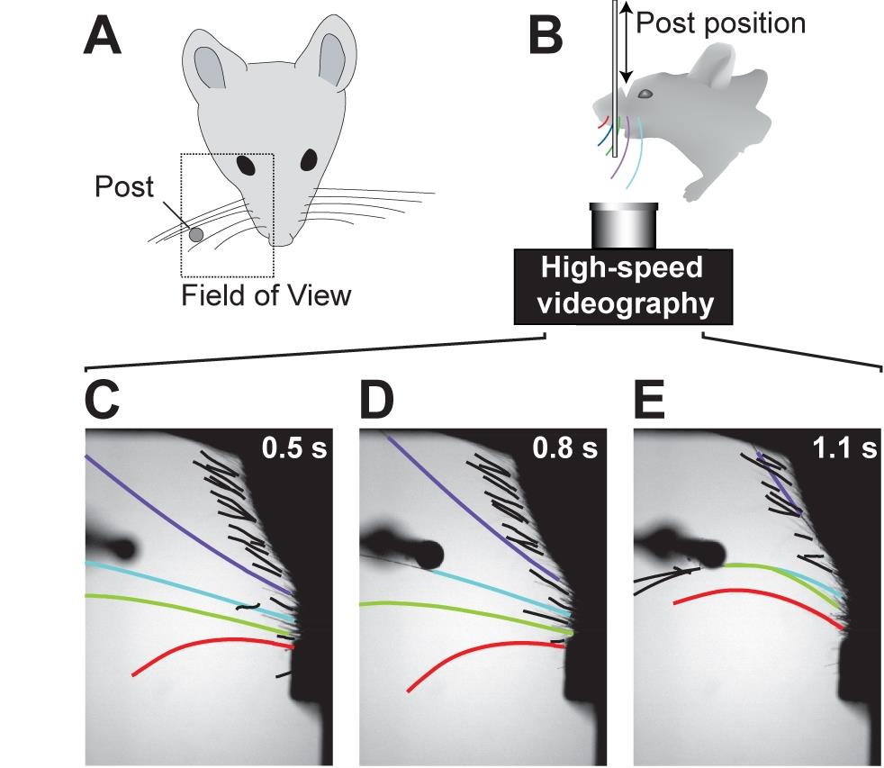
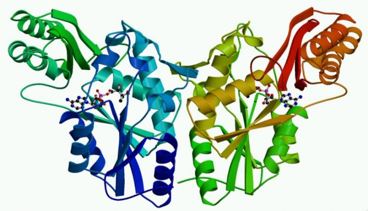
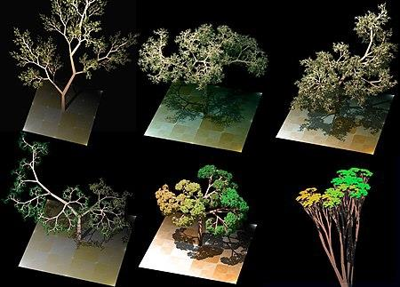

Data publicării: 16.08.2018
Autor articol: Corina Forascu
Biologia computațională este știința în care date biologice sunt folosite pentru a dezvolta algoritmi sau modele teoretice cu scopul de a înțelege diverse sisteme biologice, precum și o serie de relații între ele. Deși implică multe aspecte din domeniul bioinformaticii, acestea sunt două discipline separate. Ambele discipline combină aspecte atât din științele vieții precum și din informatică și științe și tehnologii computaționale. Aceste abordări interdiscplinare reies din discpline foarte specifice și exacte precum matematica, fizica, biologia, știința comportamentală, informatica și ingineria. Conform unei definiții oferite de un grup de specialitate din cadrul National Institutes of Health, biologia computațională este un domeniu de studiu care implică dezvoltarea și aplicarea de metode teoretice de analizare de date, modelare matematică și tehnici de simulări computaționale pentru a studia sisteme biologice, comportamentale sau sociale. Așadar, în timp ce bioinformatica aplica principii din știința și tehnologia informației pentru a face datele aprofundate, vaste și mai complexe ale științelor vieții mai ușor de înțeles și utile, biologia computațională utilizează abordări matematice și computaționale pentru adresarea problemelor teoretice și experimentale din biologie și alte științe ale naturii. Deși bioinformatica și biologia computațională sunt distincte, există, de asemenea, o suprapunere semnificativă între cele două.
Până de curând, biologii nu aveau acces la cantități foarte mari de date. Asemenea date au devenit însă obișnuite în ultima perioadă, în special în domeniul biologiei moleculare și al genomiei. Cercetătorii au reușit să dezvolte metode analitice pentru interpretarea informațiilor biologice, dar nu au putut să le împărtășească rapid în rândul colegilor (Hogeweg, 2011).
Bioinformatica a început să se dezvolte la începutul anilor 1970. A fost inițial considerată știința analizei proceselor informatice ale diferitelor sisteme biologice. În această perioadă, cercetarea în domeniul inteligenței artificiale folosea modele de rețea ale creierului uman pentru a genera noi algoritmi. Această utilizare a datelor biologice pentru a dezvolta alte domenii a împins cercetătorii biologici să revină la ideea utilizării computerelor pentru a evalua și compara seturi mari de date. Cantitatea de date partajate între cercetători a început să crească exponențial până la sfârșitul anilor 1980. Aceasta a necesitat elaborarea de noi metode computaționale pentru a analiza și interpreta rapid informațiile relevante.
De la sfârșitul anilor 1990, biologia computațională a devenit o parte importantă a dezvoltării tehnologiilor emergente în domeniul biologiei. Biologia computațională a fost utilizată pentru a secvenționa genomul uman, a crea modele exacte ale creierului uman și a ajuta la modelarea sistemelor biologice. (Ouzounis, 2012).
Disciplinele în care biologia computațională se poate aplica sunt foarte variate, iar ca urmare o serie de subdomenii de cercetare există care se bazează foarte mult pe aceste principii.
Anatomia computațională se axează pe cercetarea cantitativă și modelarea variabilității formelor anatomice. Aceasta implică dezvoltarea și aplicarea metodelor matematice, statistice și de analiză a datelor pentru modelarea și simularea structurilor biologice și combină elemente de anatomie, matematică aplicată dar și teoretică, învățare automata, științe computaționale, imagistică biologică, probabilitate și statistică. Interpretarea sa folosește metadate derivate din modalitățile originale de obținere ale imaginilor senzoriale (dintre care Imagistica de rezonanță magnetică este un exemplu). Se concentrează asupra structurilor anatomice înregistrate, mai degrabă decât asupra dispozitivelor medicale de imagistică. Se aseamănă în acest sens cu lingvistica computațională, o disciplină care se concentrează mai degrabă pe structurile lingvistice decât pe senzorul care acționează ca mijloc de transmisie și comunicare (Grenander&Miller,1998).
Biomodelarea computațională este un domeniu referitor la construirea modelelor computerizate ale sistemelor biologice. Biomodelarea computațională urmărește dezvoltarea și utilizarea simulărilor vizuale pentru a evalua complexitatea sistemelor biologice. Acest lucru se realizează prin utilizarea algoritmilor specializați și a software-ulilor de vizualizare. Aceste modele permit predicția modului în care sistemele vor reacționa în medii și condiții diferite. Acest lucru este util pentru a determina dacă un sistem este robust. Un sistem biologic robust este acela care “își menține starea și funcțiile împotriva perturbațiilor externe și interne” (Kitano, 2002), care este o caracteristică esențială pentru supraviețuirea unui sistem biologic. Biomodelarea computațională generează o arhivă amplă a acestor date, permițând accesul și analiza de către mai mulți utilizatori. În timp ce tehnicile actuale se concentrează asupra sistemelor biologice mici, cercetătorii lucrează la abordări care vor permite analiza și modelarea rețelelor mai mari. Acest lucru va fi esențial în dezvoltarea abordărilor medicale moderne în vederea creării de noi medicamente și terapii genetice.
O altă arie de studiu în care poate fi aplicată metoda computațională este este biologia cancerului, cu scopul de a determina viitoarelor mutații ale cancerului printr-o abordare algoritmică a analizei datelor (Yakhini&Jurisica, 2011). Cercetarea în acest domeniu a condus la utilizarea măsurătorilor de mare viteză a unui volum mare de informații. Măsurarea unui debit mare de date presupune colectarea a milioane de puncte de date și este posibilă utilizând robotică și alte dispozitive de detectare. Aceste date sunt colectate din ADN, ARN și alte structuri biologice. Domeniile de interes includ determinarea caracteristicilor tumorilor, analizarea moleculelor care pot fi deterministe în producerea cancerului și înțelegerea modului în care genomul uman se raportează la cauzalitatea tumorilor și a cancerului.
Neuropsihiatria computațională este un nou domeniu în curs de dezvoltare care utilizează modelarea matematică și computațională a mecanismelor creierului implicate în tulburările psihice. S-a demonstrat deja prin mai multe inițiative că modelarea computațională este o contribuție importantă pentru înțelegerea circuitelor neuronale care ar putea genera funcții mentale și disfuncții precum schizofrenia de exemplu (Dauvermann et al., 2014).
Abordarea computațională poate fi foarte utilă și în zona cercetărilor ecologice. Foarte adesea, ecologiștii sunt confruntați cu sisteme deosebit de complexe din punct de vedere al modelelor, proceselor, diversității sau funcționarea acestora. O înțelegere completă a unui sistem din punct de vedere ecologic este foarte dificlă din cauza numărului foarte mare de variabile care trebuie luat în calcul. Schimbările foarte rapide care au loc azi în numeroase ecosisteme de pe glob, influențate în mare măsură și de către impactul cauzat de umanitate, precum și cerințele societății de a adresa aceste problem fac imperativă înțelegerea complexității sistemelor ecologice. Această nevoie prezintă provocări la nivelul structurii fundamentale a teoriei ecologice, dar și pentru asimilarea cantităților mari și crescânde de date despre sistemele ecologice și mediile lor care devin disponibile. Prin modelarea matematică pot fi generate noi perspective asupra dinamicii ecologice și evolutive a populațiilor și comunităților, iar abordările computaționale permite explorarea modului în care organismele se confruntă cu schimbarea condițiilor de mediu, dar și felul în care natura și viața sunt distribuite pe planeta noastră. (Pascual, 2005)
Neuroștiința computațională presupune studiul funcționării creierului din punct de vedere al proprietăților de procesare a informației din diferitele structure care compun sistemul nervos. Este o ramură a neuroștiinței pure, și își propune să analizeze date legate de creier cu scopul de a crea aplicații practice. Acest lucru implică utilizarea de modele ale creierului pentru a examina anumite aspecte specifice ale sistemului neurologic. Din multele feluri de modele, cele mai importante sunt cele realistice si cele simplificate. Modelele realistice incearcă sa reprezinte fiecare aspect al creierului, incluzând cât mai multe detalii cu putință, și un număr foarte mare de variabile. Aceste modele oferă o cantitate foarte mare de informații despre creier, dar au și cea mai mare predispoziție la erori, întrucât nu țin cont de părțile de structură celulară depre care cercetătorii încă nu știu. Modelele realistice sunt cele mai grele de realizat din punct de vedere computational și foarte dificile de implementat. Pe de cealaltă parte, modelele simplificate își propun să reducă dimensiunea modelului pentru a examina o proprietate fizică cât mai specific a sistemului neurologic. Acest lucru permite rezolvarea problemelor computaționale mai intense și reduce potențialul de eroare a unui model realistic, întruct sunt mult mai puține necunoscute luate în calcul. Cercetarea în domeniul neuroștiinței computaționale duce la îmbunătățirea algoritmilor folosiți și a structurilor de date pentru a crește viteza acestor calcule.
Există trei componenente principale ale biologiei computaționale, care fac parte, de altfel, și din domeniul bioinformaticii: analiza datelor, dezvoltarea de software-uri și modelarea datelor.
Partea de analiza de date are ca scop procesarea unor date neprelucrate în vederea obținerii unui mod mai facil de înțelegere a acestora. Aici poate fi vorba de aspecte de statistică, data mining sau doar crearea de interpretări vizuale. Practic, prin acest fel se ajunge la o modalitate mai simplă de a interpreta informația, ceea ce o face mai accesibilă și mai ușor de transmis. Datele procesate corepunzător pot fi raportate, împărtășite sau explicate unui public mai larg. Acest lucru este foarte util pentru diseminarea de informații și promovarea de colaborări între arii de studiu similare. Dat fiind că biologia, sau științele vieții în general, implică o înțelegere foarte vastă și utilizarea de informații din domenii similare dar foarte diferite în același timp, facilitarea transferului de date prin abordări computaționale este foarte utilă.
Dezvoltarea de softwareuri pentru explorarea științelor biologice este o direcție nouă de dezvoltare a cercetării din lumea informaticii, și este din ce în ce mai populară. Softwareurile open source oferă o platformă ideală pentru dezvoltarea aplicațiilor de biologie computațională. Open source presupune accesul mai multor persoane/entitați care pot contribui sau beneficia de softwareul respectiv. Sunt patru calități care fac sistemele open source foarte potrivite pentru acest scop. Reproductibilitatea acestora permite cercetătorilor să folosească aceleași metode exacte folosite pentru a calcula relațiile dintre datele biologice. Dezvoltarea accelerata se referă la faptul că dezvoltatorii și cercetătorii nu trebuie să reinventeze algoritmii deja existenți pentru taskuri minore. În schimb, pot folosi programe deja existente pentru a salva timp pentru dezavoltarea și implementarea unor proiecte mai mari. Calitatea crescută a rezultatelor provenită de la faptul ca mai mulți experți din același domeniu pot contribui la crearea software-ului aduce o siguranță în plus și scade predispoziția codului la erori. Nu în ultimul rând, software-urile open source au o valabilitate pe termen mult mai lung. Aceste programe nu sunt asociate nici unei întreprinderi și nu se află sub vreun brevet, ceea ce le permite distribuirea pe mai multe pagini de internet și asigură valabilitatea lor în viitor. (Prlić & Lapp, 2012)
Software-urile care pot fi create în domeniul biologiei computaționale sunt atât de variate precum e lumea naturală. Exemplele includ urmărirea mustăților rozătoarelor, recunoșterea (semi-)automată a diverselor grupuri taxonomice, combinarea de date cartografice cu informații despre secvențele biologice colectate din mediul înconjurător (GenGIS), sau desenarea, analizarea și vizualizarea căilor biologice.

Crearea de modele este o altă ramură foarte dezvoltată a biologiei computaționale. Curiozitatea cercetătorilor și interesul în a concepe modele matematice pentru a facilita înțelegerea lumii înconjurătoare a dus la dezvoltarea de asemenea modele la foarte multe niveluri și în arii foarte diverse ale biologiei.
Crearea unui model celular a reprezentat o sarcină deosebit de provocatoare a biologiei sistemelor și a biologiei matematice. Aceasta implică utilizarea simulărilor computerizate ale multor subsisteme celulare, cum ar fi rețelele de metaboliți și enzime care alcătuiesc metabolismul, căile de transducție a semnalului și rețelele de reglare a genei, atât pentru analiza, cât și pentru vizualizarea conexiunilor complexe ale acestor procese celulare.
Predicția structurii de proteine este predicția structurii tridimensionale a unei proteine din secvența de aminoacizi, adică predicția structurii terțiare a proteinei din structura sa primară (Marks et al., 2011). Acesta este unul dintre cele mai importante obiective din bioinformatică și chimie teoretică. Predicția structurii de proteine este de mare importanță în medicină (de exemplu, în designul medicamentelor) și biotehnologie (de exemplu, în proiectarea de noi enzime).

Creșterea simulată a plantelor este o altă provocare importantă a biologiei sistemelor și a biologiei matematice, care urmărește reproducerea morfologiei plantelor cu ajutorul simulărilor computaționale. Arborii electronici (e-arbori) utilizează de obicei sisteme Lindenmayer pentru a simula creșterea. Sistemele L sunt foarte importante în domeniul științei complexității și al vieții artificiale. O potențială problemă pentru simularea creșterii plantelor este aceea de a integra în mod constant factorii de mediu, cum ar fi plantele înconjurătoare, obstacolele, disponibilitatea apei și mineralelor și condițiile de iluminare. Pentru acest lucru trebuie construite medii virtuale cu un număr parametri fezabili din punct de vedere computațional, ceea ce nu numai că simulează creșterea plantei, ci și mediul în care se dezvoltă. Schimbările în disponibilitatea resurselor influențează creșterea plantelor, ceea ce are ca rezultat o nouă schimbare a disponibilității resurselor. Modele din ce n ce mai puternice și robuste vor fi necesare pentru a simula eficient aceste interacțiuni recursive (Boudon et al., 2012).

Modelele ecosistemice sunt reprezentări matematice ale ecosistemelor. În mod obișnuit, acestea simplifică rețelele trofice complexe sau nivelurile trofice și le cuantifică fie ca număr de organisme, biomasă, fie ca un anumit element chimic relevant (de exemplu carbon, azot sau fosfor). Folosind date reale provenite din măsurători, observații sau experimente, sunt derivate relațiile ecologice – cum ar fi relația dintre lumina soarelui și disponibilitatea apei la rata fotosintetică sau cea dintre populațiile de prădător și de pradă – și acestea sunt combinate pentru a forma modele ecosistemice. Aceste sisteme modelate sunt apoi studiate pentru a face predicții despre dinamica sistemului real. Adesea, studiul inexactității din model (în comparație cu observațiile empirice) va conduce la generarea de ipoteze despre posibilele relații ecologice care nu sunt încă cunoscute sau bine înțelese. Modelele le permit cercetătorilor să simuleze experimente la scară largă, care ar fi prea costisitoare sau neetice pentru a se realiza pe un ecosistem real. Ele permit, de asemenea, simularea proceselor ecologice pe perioade foarte lungi de timp (adică simularea unui proces care durează secole în realitate, se poate face în câteva minute într-un model pe calculator).
În ecotoxicologie de exemplu, scopul modelelor este înțelegerea, simularea și predicția efectelor produse de toxine în mediul înconjurător. Cele mai multe modele actuale descriu efectele asupra unuia dintre numeroase niveluri diferite de organizare biologică (de exemplu, organisme sau populații). O provocare este dezvoltarea de modele care prezic efecte pe mai multe niveluri biologice.
Ecopath with Ecosim (EwE) este un pachet software de modelarea ecologică pentru computere personale care a fost construită și extinsă de aproape douăzeci de ani. Dezvoltarea se concentrează pe inițiativa Ecopath International, o asociație non-profit de cercetare creată pentru a asigura dezvoltarea pe termen lung a EwE. Aplicațiile EwE sunt răspândite în întreaga lume. EwE este primul model de simulare a nivelului ecosistemic accesibil pe scară largă și liberă. Începând cu ianuarie 2018, EwE are aproximativ 8000 de utilizatori în peste 170 de țări diferite și peste 800 de publicații în ISI Web of Knowledge, făcând EwE o abordare importantă de modelare pentru a explora problemele legate de ecosistem în științele marine. Software-ul Ecopath a fost recent recunoscut ca unul dintre primele zece descoperiri științifice ale NOAA (National Oceanic and Atmospheric Administration, USA) în ultimii 200 de ani.
Ecopath poate fi utilizat pentru a adresa întrebări ecologice, a evalua efectele pescuitului asupra ecosistemului, a explora diferite opțiuni legate de politicile de gestionare ale unui ecosistem, a evalua impactul și amplasarea zonelor protejate sau e evalua efectul schimbărilor de mediu. (Pauly et al., 2000)
De asemenea, este posibil să se modeleze matematic progresul multor bolilor infecțioase pentru a descoperi rezultatul probabil al unei epidemii sau pentru a contribui la gestionarea acestora prin vaccinare. Acest câmp al epidemiologiei computaționale încearcă să găsească parametrii pentru diferite boli infecțioase și să utilizeze acești parametri pentru a face calcule despre efectele unui program de vaccinare în masă.
Referințe
- Celebrating200years.noaa.gov. (2017). ECOPATH Modeling, Precursor to an Ecosystem Approach to Fisheries Management. [online] Available at: http://celebrating200years.noaa.gov/breakthroughs/ecopath/welcome.html
- Boudon, F., Pradal, C., Cokelaer, T., Prusinkiewicz, P. and Godin, C. (2012). L-Py: An L-System Simulation Framework for Modeling Plant Architecture Development Based on a Dynamic Language. Frontiers in Plant Science, 3.
- Clack, N., O’Connor, D., Huber, D., Petreanu, L., Hires, A., Peron, S., Svoboda, K. and Myers, E. (2012). Automated Tracking of Whiskers in Videos of Head Fixed Rodents. PLoS Computational Biology, 8(7).
- Dauvermann, M., Whalley, H., Schmidt, A., Lee, G., Romaniuk, L., Roberts, N., Johnstone, E., Lawrie, S. and Moorhead, T. (2014). Computational Neuropsychiatry – Schizophrenia as a Cognitive Brain Network Disorder. Frontiers in Psychiatry, 5.
- Grenander, U. and Miller, M. (1998). Computational anatomy: an emerging discipline. Quarterly of Applied Mathematics, 56(4), pp.617-694.
- Hogeweg, P. (2011). The Roots of Bioinformatics in Theoretical Biology. PLoS Computational Biology, 7(3), p.e1002021.